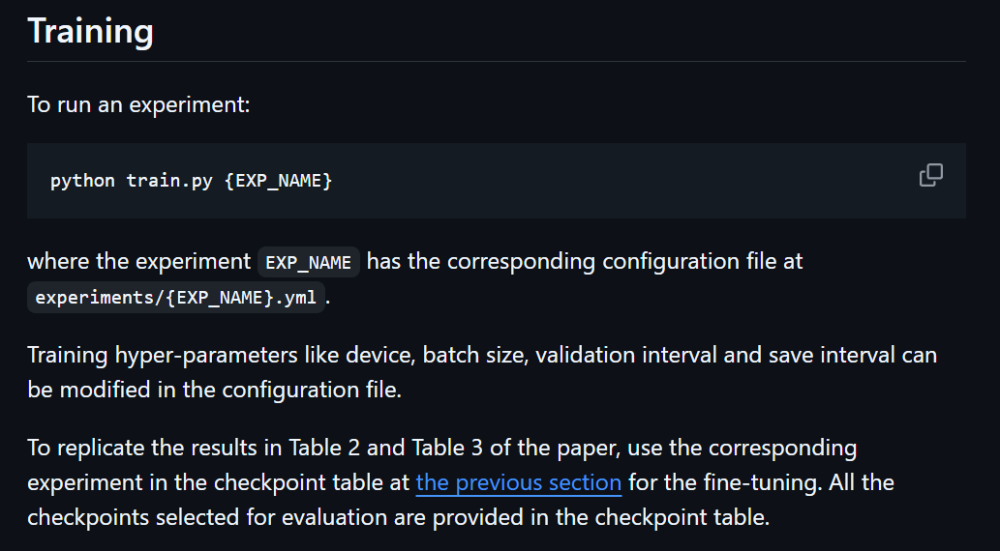
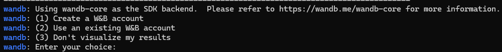
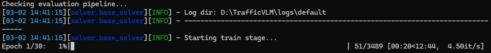
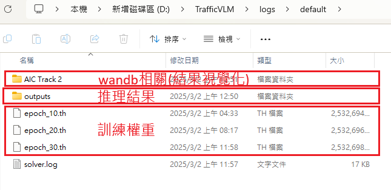
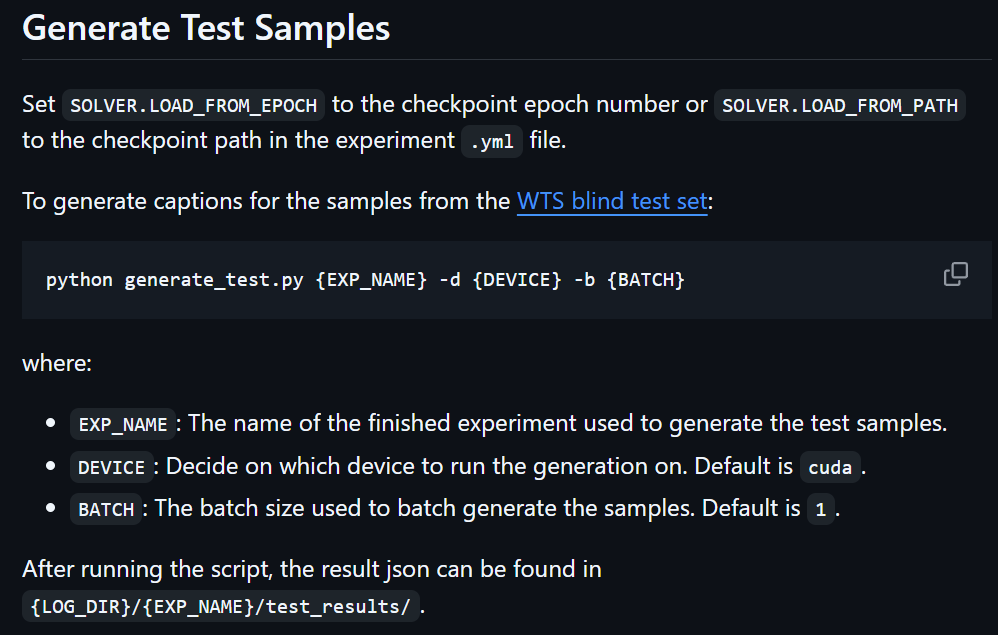

前言
這篇是在研究所的時候教專題生怎麼訓練和測試 TrafficVLM 的教學，以下正文開始。
TrafficVLM 的主要任務是輸入一個交通影片，然後他會把影片中出現的交通事件用文字描述出來，就很像是記者在對車禍影片寫旁白的那種感覺。
環境準備
以下是需要準備先做好的前置作業，這個模型其實在哪一種作業系統上照理來說都能執行，流程都是相同的。
- 建立一個 python 3.10 虛擬環境 (建議用 anaconda 或 virtualenv 建立環境，否則電腦環境一下就爛了喔:))
- 安裝 pytorch 套件
- 電腦最少要留有 17G 的儲存空間 (因為訓練資料集較大)
下載需要的程式碼和模型權重
-
首先把這個專案 clone 下來
git clone https://github.com/quangminhdinh/TrafficVLM.git -
再來進入 config.py 更改下面內容 (路徑的分隔符號是 / 不是 \，寫反會報錯喔):
-
第 8 行:
_C.GLOB.EXP_PARENT_DIR是儲存 log 的路徑，等模型訓練完會把所有資料放在這個目錄，設定什麼路徑都可以。 -
第 75 行:
_C.MODEL.VID2SEQ_PATH是儲存預訓練模型權重的路徑，也就是模型裡的 backbone 權重，可以到這個連結 看作者提供了哪些，根據需求決定要載哪一個權重。下面以
vid2seq_htmchaptersvitt.pth為例: 點選黃色框內的按鈕下載檔案，他是一個.pth檔，找個地方存這個檔案然後把路徑改到_C.MODEL.VID2SEQ_PATH。
-
-
最後到這裡 下載訓練資料集，再來看
TrafficVLM/dataset/config.py，他要設定的是跟資料集有關的。到第四行 ROOT_PATH 更改資料集的路徑，就是上一步的資料集路徑貼到這裡 (路徑的分隔符號是 / 不是 )。如果專題生在實際訓練時，用的會是自己的資料集，要把資料集架構改的跟原資料集相同，要把上面連結的檔案載下來看長怎樣。
訓練模型
進入上面開好的 python 虛擬環境，跑這個指令，然後 EXP_NAME 是從 /experiments 挑一個檔名複製貼上，不同的檔案放的是不同的模型參數 (但我不知道差在哪，可能看論文會比較清楚)。

然後在中間會有一個選項問你要不要使用 wandb，他會把訓練過程的各種參數用視覺化方式呈現出來，我沒有帳號就不示範了。這個就看你需求，如果只是想訓練看看可以選 (3)。

然後會呈現像這樣的輸出，1/30 代表在跑 30 個 epoch 裡的第 1 個 epoch。

訓練完之後，在你的 _C.GLOB.EXP_PARENT_DIR 路徑就會看到輸出結果。

模型測試
再來改 TrafficVLM/config.py，把第 80 行 SOLVER.LOAD_FROM_EPOCH 改成你剛剛訓練的模型的 epoch 數。然後指令上有三個參數，EXP_NAME 就照著你訓練時候選的寫一樣的就好，DEVICE 寫 cuda，BATCH 設 1。

這樣以上就是全部的訓練流程了!